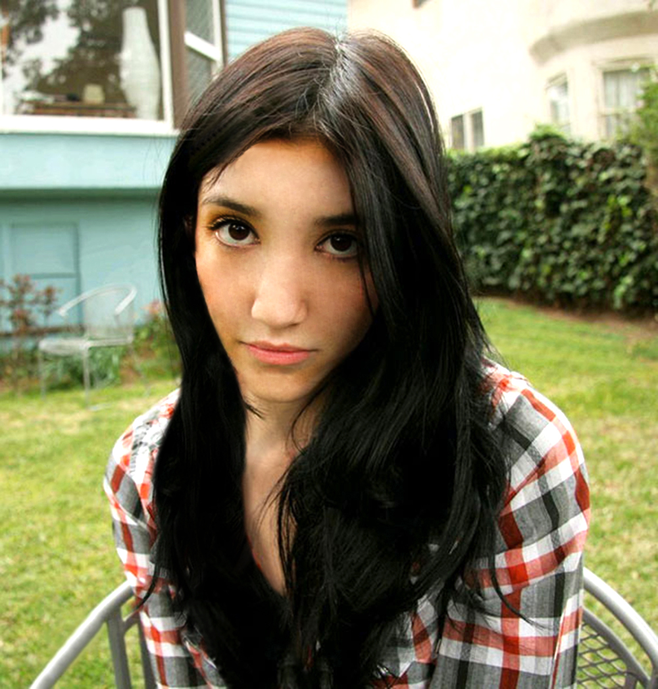
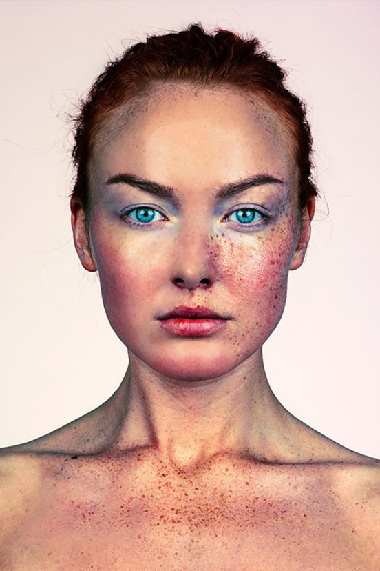
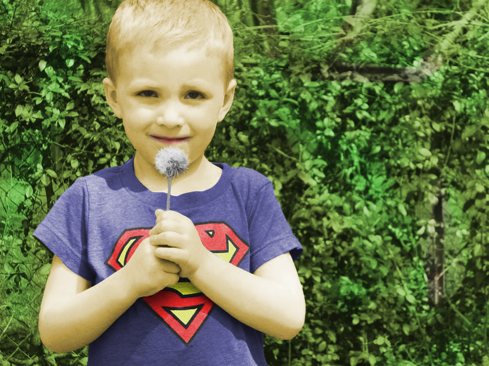
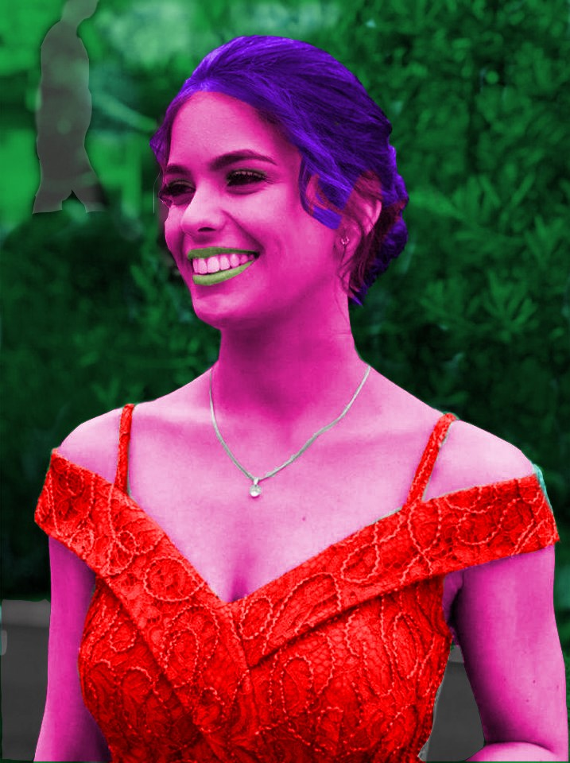
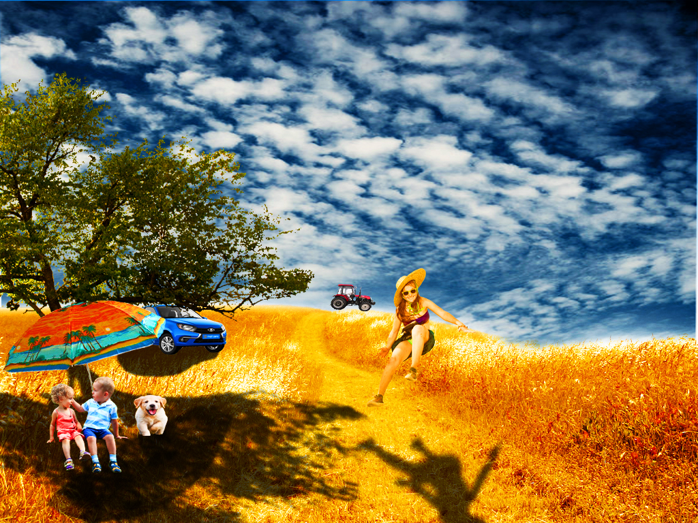
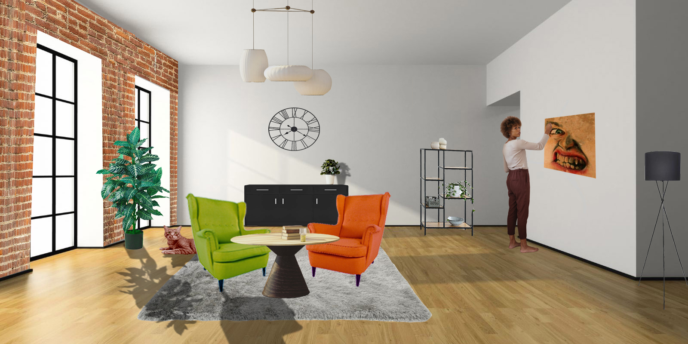
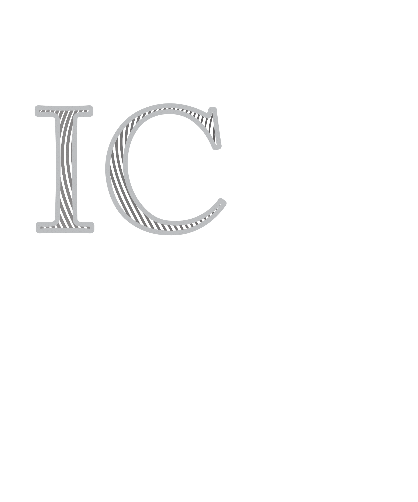
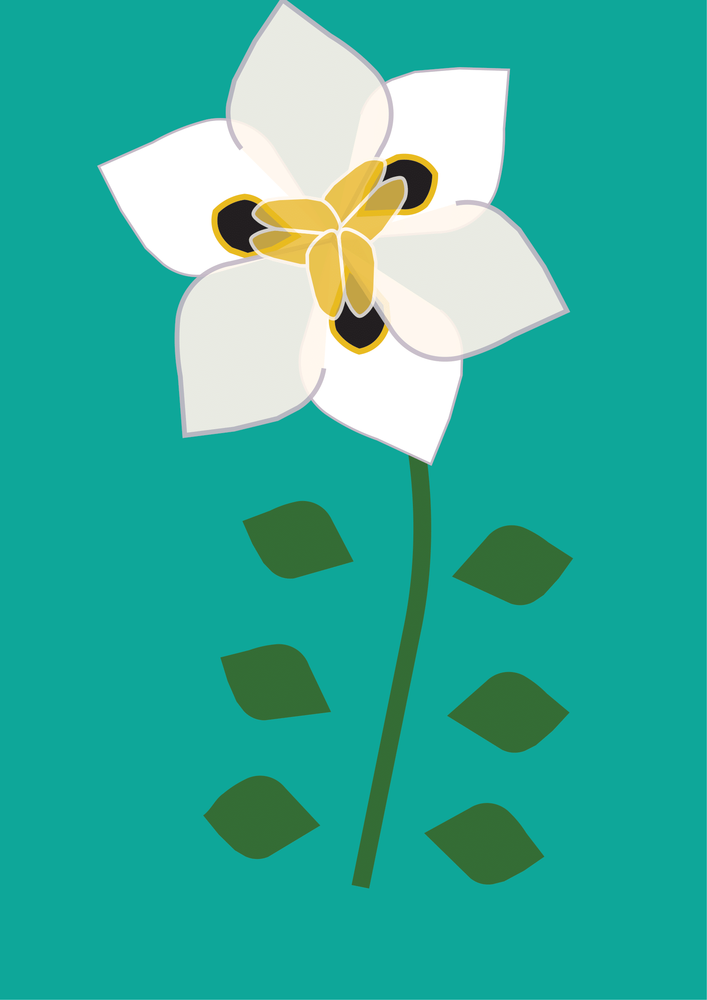

🡠 Povratak na prethodnu stranicu
Vježbe
Ovdje možete pogledati sve vježbe koje sam odradila tijekom ovog semestra.
Photoshop - vježba 1: retuširanje
 Photoshop - vježba 2: rekoloriranje
 Photoshop - vježba 3: fotomontaža
Photoshop - vježba 3: projektni zadatak
Illustrator - vježba 1: vlastiti inicijali
Illustrator - vježba 2: cvijet
